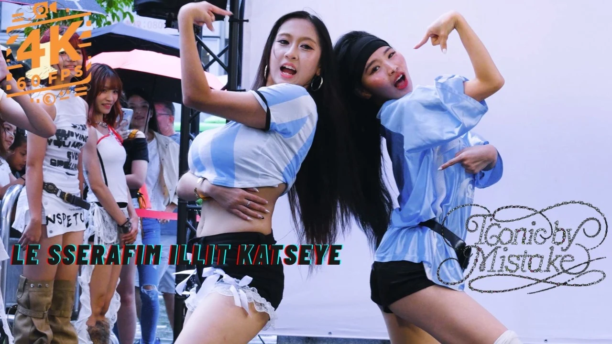
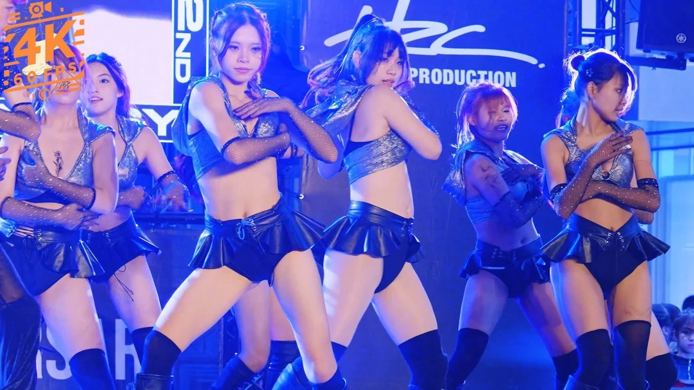
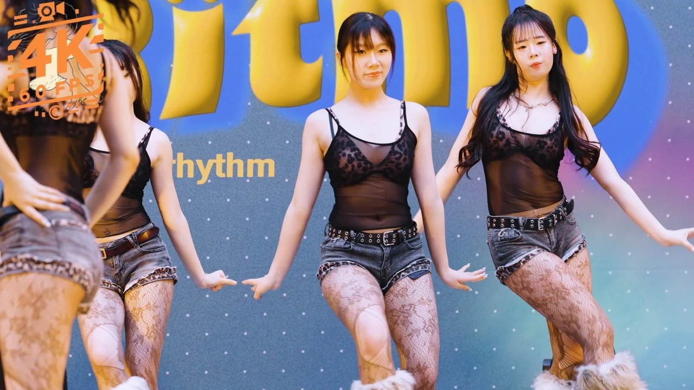
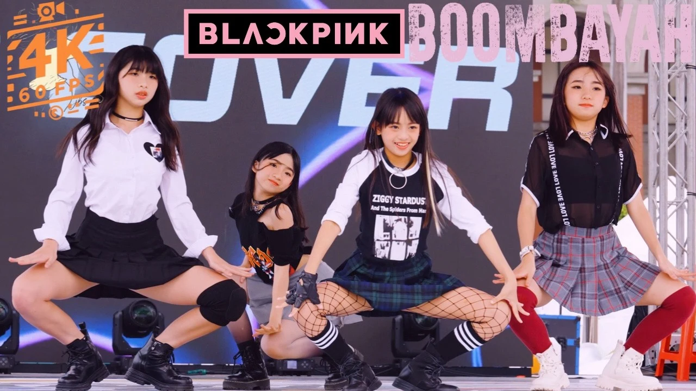
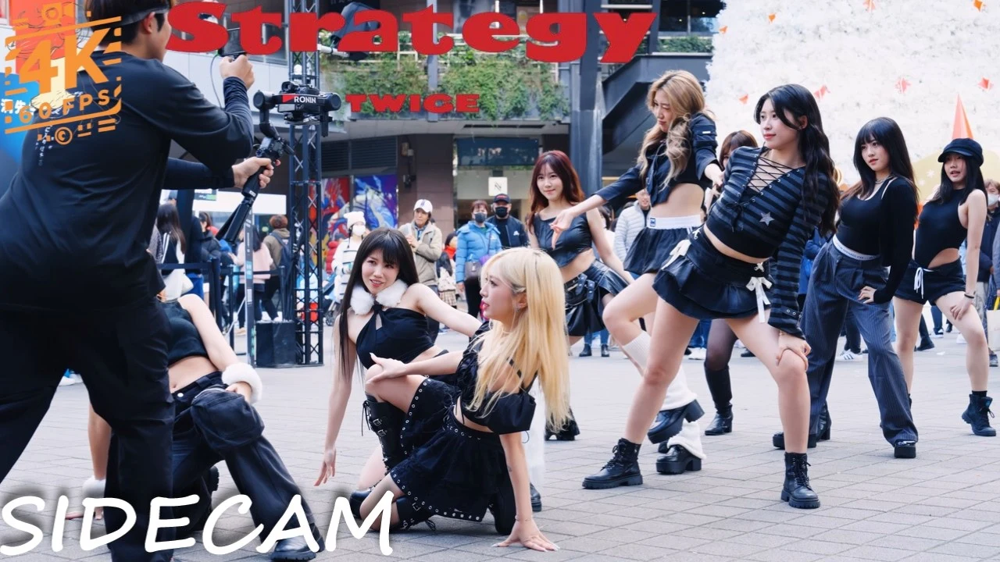
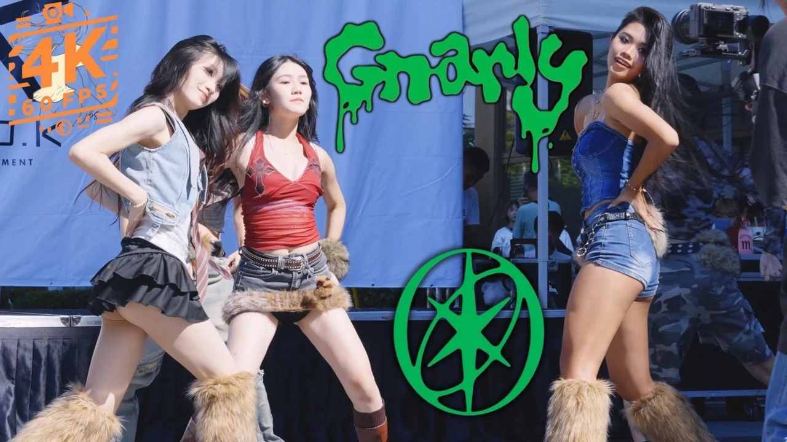

01202603:28K-POP IN PUBLIC
ICONIC BY MISTAKE
舞客星夏日派對舞蹈快閃 · 台中

你專注發光。我專注留下那道光。
MOVEMENT. ENERGY. CONNECTION.01 / SELECTED WORK

01202603:28K-POP IN PUBLIC
舞客星夏日派對舞蹈快閃 · 台中

02202604:43LIVE PERFORMANCE
桃竹苗高中職聯合舞展 · 第 23 屆

03202504:33DANCE COMPETITION
佳人們誰懂 · DANCE ON LIFE 新竹

04202402:59DANCE COVER / SIDE CAM
TWICE Dance Cover · 信義區街頭側拍

05202502:44K-POP IN PUBLIC
Fireworks · 舞客星台中夏日快閃
LIVE PERFORMANCE
鶯歌 × 明德 × 松商 × 秀峰 · SYM Dance30
02 / WHAT I DO
為舞者、舞團與活動主辦方，
留下值得分享、反覆回看的影像。
LIVE & EVENTS
從校園成發到街舞競賽，記錄舞碼的隊形、節奏與現場氣氛，讓精心準備的演出，有一份能再次回味的紀錄。
DANCE & STREET
捕捉 cover 與快閃演出的動作細節，把舞者的表情、默契與街頭的生命力，一起留在鏡頭裡。
ANOTHER PERSPECTIVE
從另一個視角記錄同一場演出。事先聊聊想聚焦的舞者、段落與構圖，為你的作品集留下屬於自己的畫面。
拍攝時長、機位、交付規格與使用方式，依每次需求討論；直式短片與重點片段也歡迎一起聊聊。
03 / THE EYE BEHIND
我在台灣拍攝舞蹈與現場演出，經營 YouTube 頻道「側影之心」。從街頭的 K-pop cover，到校園舞展與熱舞賽事，鏡頭裡始終是那些全力投入的人。
我想留下的，是動作裡的情緒、舞台上的默契，以及只發生一次的現場。讓舞者看見自己的努力，也讓更多人感受到那份熱愛。
在 Instagram 看更多日常YouTube 公開數據
截至 2026.09.09
04 / LET’S MAKE IT HAPPEN
告訴我活動日期、地點、演出內容與期待的影片，從需求開始確認檔期。
討論流程、機位與重點段落，確認報價、拍攝範圍及交付方式後，準備開拍。
依約定內容整理與交付影像，讓你的演出成為可以珍藏、分享與回看的作品。
HAVE A MOMENT WORTH CAPTURING?
有舞展、演出，或正在構思一支舞蹈影片？
帶著你的想法，來聊聊。
LET’S START WITH YOUR IDEA
透過 Instagram 私訊，提供日期、地點、拍攝時長與需求。會依拍攝內容、交通與交付規格討論報價；檔期以雙方確認為準。
可以先提出需求，一起確認機位、構圖、素材是否適合，以及交付內容。若你是已發布影片的演出者，也歡迎附上影片連結與時間碼私訊詢問；原檔能否提供依保存狀況而定。
公開發布、交付用途與演出者授權會在合作前一起確認。若有未公開作品、音樂使用或活動方的限制，請事先告知，讓拍攝與使用方式符合你的需求。